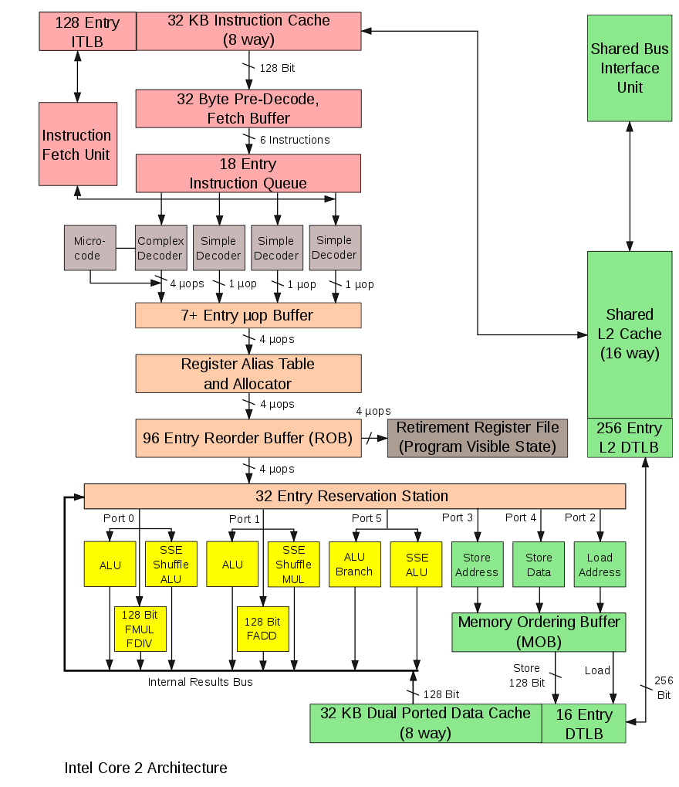

GPU programming
How GPU differs from CPU
Hardware perspective
CPU was originally created for maximal throughput of a single threaded program. Therefore modern CPUs devote much of it's real estate towards maximizing utilization of a computing resource (arithmetic logic unit - ALU), which now occupies relatively small part of the die. Below is the picture of a processor of Intel's Core architecture (one of the earliest in the series).  
It contains blocks allowing to execute instructions in parallel, out of order, speculatively just to maximally utilize all computational units. Notable functionalities / blocks are
superscalar execution is an ability to execute more than one instruction at the given time (see multiple ports to different units).
Reorder buffer reorders \instructions in queue such that two non-interfering instructions can be executed simultaneously.
Register renaming renames registers, such that two non-interfering instructions operating over the same register can be executed together.
Branch prediction predicts which branch will be taken and execute instructions in that branch. Misses are costly, as the processor needs to roll back emptying the instruction pipeline. The processor state is not fully restored, which may lead to side-channel attacks such as Spectre[1].
speculative prefetching load instruction / data from memory to processor along the branch that is expected to be taken advance in the hope they will be executed (depends on branch predictions)
Memory management unit is not shown but takes care of translation of virtual addresses to physical, checking the security bits of pages, etc.
Caches (three levels) thrive to provide instructions with data from cache, such that it does not have to wait for the load. Caches are opaque to the user, he does not control, what will stay in cache.
L1 Cache synchronization If the processor contains many cores, their L1 caches are atomically synchronized.
Buffers are used to cache for example mapping of virtual to physical addresses, partial computations to allow rollbacks.
Interrupt management CPU can interrupt its execution and transfer the execution to a different location, changing security levels.
GPU was from the very beginning designed for maximal throughput, primarily achieved by parallelism. The reason for this is simple. Imagine that you need to render a 4K image (resolution 3840 × 2160 = 8 294 400 pixels) with refresh rate 60fps in a first person shooter game. This means that you need to compute intensities of 0.5G pixels per second. Leaving our some details, this program for computing the intensity of a pixel may look something like this
for (i,j) in Iterators.Product(1:2160, 1:3840)
image[i,j] = compute_insity(i, j)
end, where the computation of intensities compute_insity(i, j) does not contain many branches. As a result GPUs have been designed for massive parallelism with each core being as simple as possible, leaving all difficulties up to the programmer / compiler. An illustration of a modern gpu architecture is show on the example of NVidia's GPU. 
- The chip contains many streaming multi-processors (SM). Normally, each streaming processor would be called core, as it is an indivisible unit, but NVidia decided to call "a core" a unit inside the streaming multi-processor performing stream of operations over a set of 32bit registers.
- Each streaming multi-processor contains (possibly multiple blocks of) 32-way (32-wide) SIMT units (NVidia calls that CUDA Core), shared memory (managed cache) and register file (16k registers, but shared among all threads). Therefore a pascal P-100 can have up to 64×4×32 = 8192 cores, which certainly sounds cool in comparison to for example 24 cores of normal processors, but given the architecture limitation we cannot expect proportional speedup.
- Each streaming multi-processors (SM) has one instruction fetch and decode unit, which means that all CUDA cores of that SM has to execute the same instruction at a given cycle. This simplifies the design. The execution model therefore roughly corresponds to vector (SIMD) registers in normal CPU, but CUDA cores are not as restricted as SIMD registers. NVidia therefore calls this computation model single instruction multiple threads (SIMT). Main differences:
- SIMD requires the memory to be continuous while SIMT does not.
- The programming model of SIMT is explicitly scalar while that of SIMD is explicitly vector.
32 CUDA cores each operating over 32bit registers would be equal to 1024bit long vector (SIMD) registers. Modern Intel XEON processors has 256 bit / 512 bit long registers, which seems similar, as said above in order to use them the data has to be aligned in memory and sometimes they has to be on a particular offset, which might be difficult to achieve in practice (but to be fair, if the data are not aligned in GPU, the loading of data is very inefficient).
- 16k registers per SM might seem like a lot, but they are shared between all threads. In modern GPUs, each SM supports up to 2048 threads, which means there might be just 8 32-bit registers per thread.
- GPUs do not have virtual memory, interrupts, and cannot address external devices like keyboard and mouse.
- GPUs can switch execution contexts of "set of threads" at no cost. In comparison the context switch in CPU is relatively expensive (we need to at least save the content of registers, which is usually sped up by having two sets of registers). This helps to hide latencies, when a set of threads is stalled (they wait for memory access, synchronizing with others).
- The programmer deals with "raw" storage hierarchy. This means that we have to manage what will be and what will not be in cache, on GPU.
- Caches are synchronized only within a single SM, this much simpler in comparison with CPU, where L1 caches are synchronized across cores, which according to some researchers may presents a bottleneck with increasing number of CPU cores.
- SM has relatively low frequency clocks, which helps to deal with thermal problems.
- The memory in SM is divided into 16 banks, write operations to a bank is sequential. If two threads are writing to the same bank, this write is sequential, therefore one thread(s) has to wait while the other finishes (stalling).
Programming / Execution model
The GPU works in an asynchronous mode. If we want to execute something on GPU, we need to
- Upload the data to GPU memory (if they are not already there)
- Compile the kernel –- a code to be executed on GPU (if not already compiled)
- Upload the kernel code to GPU
- Request the computation of the kernel (more on this below). GPU will put the request for the computation to its queue of works to be performed and once resources are free, it will do the compuation.
- The control is immediately returned, which means that CPU can continue doing its job.
- CPU can issue a blocking wait till the computation is done, for example fetching the results, sychronizing with other threads in the block.
Let's now look at point 4. in more detail. Recall that GPU is designed for processing data in parallel, something we can abstract as
for i in 1:N
kernel!(result, i)
endwhere kernel!(result, i) means compute the i-th item of the data using function kernel!, which is modifying as kernel function cannot return value, but has to put all results to the preallocated array. i-th part of the data usually corresponds to one float number (usually Float32). Here, we can see that SIMT has a scalar notation, we refer to individual numbers inside arrays.
Each item, kernel!(result, i), is executed on a single thread. GPU always execute 32 threads at once on a single SM. This group of 32 threads is called warp. These 32 threads within warp can very effectively communicate with each other using atomic instructions. A user has to group threads into thread blocks. Each block is executed on a single SM, which means that all threads within this group have access to fast SM local memory. All blocks of single job are called grid.
- From the above we can already see that the number of threads has to be multiple of 32 (given by the requirement on warps).
- Each block can have up to 2048 threads, which are executed on a single SM. Large number of threads in a single block is good if
- those threads needs to access the same memory (for example in Stencil operations), which can be put to the local cache and
- each thread reads data from memory (which are not coalesced) and the SM can run different thread while other is stalling (mostly due to waiting for finishing loading data from memory).
On the other hand large number of threads per group might stall due to insufficient number of registers and / or other threads being busy.
- The total number of issued threads has to be multiple of 32 and of the number of threads per block, hence there will almost always be threads that does not do anything (unless the size of the job is aligned with the number of threads spawned.
- The division of a total number of items to be processed
Ninto blocks is therefore part of the problem and it can be specific to a version of GPU. - For some operations (e.g. reduction seen below) to get the highest performance, you need to write the same algorithm for three levels of sets of threads –- warp, groups, and grid. This is the price paid for exposed cache levels (we will se an example below on reduction).
As has been mentioned above, all CUDA cores in one SM are processing the same instruction. therefore if the processed kernel contains conditional statements if / else blocks, both blocks will be processed in sequential order as illustrated below,

which can significantly decrease the throughput.
Latency hiding
A thread can stall, because the instruction it depends on has not finished yet, for example due to loading data from memory, which can be very time consuming (recall that unlike SIMD, SIMT can read data from non-coallesced memory location at the price of increased latency). Instead of waiting, SM will switch to execute different set of threads, which can be executed. This context switch does not incur any overhead, hence it can occur at single instruction granularity. It keeps SM busy effective hiding latency of expensive operations.  image taken from
image taken from
using GPU without writing kernels
Julia, as many other languages, allows to perform certain operations on GPU as you would do on CPU. Thanks to Julia's multiple dispatch, this is almost invisible and it is sufficient to convert the Array to CuArray to notify the system that array is in GPU's memory.
For many widely used operations, we have available kernels, for example below, we use multiplication.
using CUDA
using BenchmarkTools
x = randn(Float32, 1000, 1000)
y = randn(Float32, 1000, 1000)
x * y
cx = CuArray(x)
cy = CuArray(y)
cx * cy
x * y ≈ Matrix(cx * cy)
julia> @btime x * y;
5.737 ms (2 allocations: 3.81 MiB)
julia> @btime cx * cy;
18.690 μs (32 allocations: 624 bytes)
julia> @btime CUDA.@sync cx * cy;
173.704 μs (32 allocations: 624 bytes)
julia> @btime Matrix(CuArray(x) * CuArray(y));
1.651 ms (47 allocations: 3.82 MiB)The matrix multiplication on GPU is about 33x faster, which is likely caused by being optimized by directly NVidia, as cx * cy calls CuBlas library. If we add the cost of sending and retrieving data from the memory, we have 3.5x speedup, but that is not fair. The goal is to compute everything on GPU.
How much does it cost to send the matrix to GPU's memory? Let's measure the time of the roundtrip
julia> @btime Matrix(CuMatrix(x));
1.059 ms (9 allocations: 3.81 MiB)Since Julia is JAoT compiled, the set of operations you can do using Julia's kernels is relatively large. CUDA.jl implements generic map and reduce (albeit as we will se later, performant reduce operation is very difficult), which allows you to pass your function greatly extending the functionality.
sin.(cx).^2 .+ cos.(cx).^2
map(x -> sin(x)^2 + cos(x)^2, cx)
reduce(max, cx)
reduce(max, cx, dims = 1)Notice that in case, the function in map and in broadcasting is essentially a custom kernel. As such, the code within has to still obey (not precisely specified) rules on what can be executed as kernel. Also needless to say, that the generic map over CuArray will try to find good launch configuration (number of threads and number of blocks), which might not be an ideal for your application.
Let's now try to use CUDA on computation of Julia set, which should benefit a lot from CUDA's paralelization, as we can dispatch each pixel to each thread –- something GPUs were originally designed for.
We slightly modify the kernel we have used in our lecture on multi-threadding, mainly to force all types to be 32-bit wide
using CUDA
using BenchmarkTools
function juliaset_pixel(i, j, n)
c = ComplexF32(-0.79f0, 0.15f0);
z = ComplexF32(-2f0 + (j-1)*4f0/(n-1), -2f0 + (i-1)*4f0/(n-1))
for i in UnitRange{Int32}(0:255)
abs2(z)> 4.0 && return(i%UInt8)
z = z*z + c
end
return(i%UInt8)
end
n = Int32(1000);
is = collect(Int32, 1:n)';
js = collect(Int32, 1:n);
@btime img = juliaset_pixel.(is, js, n);
cis = CuArray(is);
cjs = CuArray(js);
img = juliaset_pixel.(cis, cjs, n);
@btime CUDA.@sync juliaset_pixel.(cis, cjs, n);We see that CPU version takes around 50ms with the GPU version takes about 64μs, which is three order of magnited faster. Notice that we have obtained this speedup almost for free without writing anything that would be GPU specific. Our juliset_pixel is the same function working the same on CPU and on GPU. If we take into the account moving the memory
@btime Matrix(juliaset_pixel.(CuArray(is), CuArray(js), n))is about 315 μs, which still 160x faster.
Profiler
Cuda offers a two sampling profilers: NVIDIA Nsight Systems and NVIDIA Nsight Compute. The first is good to optimize the overall execution of your application, observing when the kernel is launched, delays in kernel launch, utilization of CPU and GPU, etc. The second is good for optimizing the single kernel. Profilers are not shipped with CUDA.jl and you need to download them from NVidia's resources for developers here after you create an account for free.
To use the profiler, we need to launch julia within the profiler as for example /opt/nvidia/nsight-systems/2021.5.1/bin/nsys launch --trace=cuda,nvtx /opt/julia-1.8.5/bin/julia --color=yes. and then, we can profile the code using the usual @profile macro this time sourced from CUDA as
CUDA.@profile CUDA.@sync juliaset_pixel.(cis, cjs, n);the report is saved to report???.??? (nvidia likes to change the suffix) and it can be inspected by nsys-ui interactive tool. Do not forget to run the profiler twice to get rid of compilation artifacts. You can further anotate parts of your code as
CUDA.@profile CUDA.@sync begin
NVTX.@range "julia set" juliaset_pixel.(cis, cjs, n);
endfor better orientation in the code. Note that if nvtx information does not show up in the trace we have to add it to the tracing running the profiler with --trace=cuda,nvtx. Lastly it is recommended to run a kernel twice in a profile trace as the first execution of the kernel in a profiler incurs some overhead, even though the code has been already compiled.
In the output of the profiler we see that there is a lot of overhead caused by launching the kernel itself and then, the execution is relatively fast.
While Julia's JAoT greatly enhances the power of prepared kernels, you might quickly run into a case, when you are able to perform the operation on GPU, but it is very slow. Sometimes, it might be just faster to move the array to CPU, perform the operation there and move it back to GPU. Although this sounds like a pretty bad idea, it actually works very well see below.
using Mill
using Random
using CUDA
using BenchmarkTools
n = vcat(rand(1:10,1000), rand(11:100, 100), rand(101:1000,10))
x = randn(Float32, 128, sum(n))
z = zeros(Float32, 128, 1)
bags = Mill.length2bags(n)
builtin(x, bags, z) = Mill.segmented_sum_forw(x, vec(z), bags, nothing)
function naive(x, bags, z)
o = similar(x, size(x,1), length(bags))
foreach(enumerate(bags)) do (i,b)
if isempty(b)
o[:,i] .= z
else
@inbounds o[:,i] = sum(@view(x[:,b]), dims = 2)
end
end
o
end
builtin(x, bags, z) ≈ naive(x, bags, z)
@btime builtin(x, bags, z);
@btime naive(x, bags, z);
cx = CuArray(x);
cz = CuArray(z);
naive(cx, bags, cz);
@btime CUDA.@sync naive(cx, bags, cz);
@btime CUDA.@sync CuArray(builtin(Array(cx), bags, Array(cz)));Writing own CUDA kernels
Before diving into details, let's recall some basic from the above HW section:
- In CUDA programming model, you usually write kernels, which represent body of a for loop.
Niterations of the loop is divided into blocks and each block into warps. Single warp consists of 32 threads and these threads are executed simultaneously. All threads in the block are executed in the same SM, having access to the shared memory.- Each thread executes the kernel for one iteration of the for loop. This means that inside the kernel, you need to determine the index of the iteration. Therefore you will see in kernels statements like
i = threadIdx().x + (blockIdx().x - 1) * blockDim().xwhere threadIdx().x is the index of the thread within the block, blockDim().x is the total number of threads in the block, and blockIdx().x is the index of the block within the grid. x property suggest that you can partition the execution along three-dimensional cube (three nested for loops), which might be sometimes useful.
The most trivial example of a kernel is addition as
function vadd!(c, a, b, n)
i = threadIdx().x + (blockIdx().x - 1) * blockDim().x
if i <= n
c[i] = a[i] + b[i]
end
return
end
a = CuArray(Float32.(1:10000))
b = CuArray(Float32.(2:2:20000))
c = similar(a)
@cuda threads=1024 blocks=cld(length(a), 1024) vadd!(c, a, b, length(a))
cwhere
- we have defined a kernel function
vaddwhich looks more or less like normal Julia function, except it returns nothing and it contains identification of an item within loopi = threadIdx().x + (blockIdx().x - 1) * blockDim().x. - we have pre-allocated space to store results for
vaddinc @cudais the launch macro, where we have to specify the number of threads per block (thethreadskeyword) and the number of blocksblocks. The macro returns an execution context, not the actual value, which is in this case stored inc. You can think about the@cudaas moral equivalent of parallel loop.- If
Nis not divisible byblockDim, then there will be always threads not doing anything, therefore we need to have theifstatement that we are within bounds. - The
blockDim(number of threads in a block) has to be divisible by 32, which is the size of the warp.
While the vadd example is nice, it is trivial and can be achieved by map as shown above. A simple operation that is everything but trivial to implement is reduction, since it ends up in a single operation. It also allows to demonstrate, why efficient kernels needs to be written at three levels: warp, block, and grid. The exposition below is based on JuliaCon tutorial on GPU programming.
The first naive implementation might looks like
function reduce_singlethread(op, a, b)
for i in 1:length(a)
b[] = op(b[], a[i])
end
return
end
x = rand(Float32, 1024, 1024)
cx = CuArray(x)
cb = CUDA.zeros(1)
@cuda threads=1 reduce_singlethread(+, cx, cb)
CUDA.@allowscalar cb[]
sum(x)and it is pretty terrible, because all the hard work is done by a single thread. The result of the kernel is different from that of sum operation. Why is that? This discrepancy is caused by the order of the arithmetic operations, which can be verified by computing the sum as in the kernel as
foldl(+, x, init=0f0)For the sake of completness, we benchmark the speed of the kernel for comparison later on
@benchmark CUDA.@sync @cuda threads=1 reduce_singlethread(+, $(CUDA.rand(1024,1024)), $(CUDA.zeros(1)))We can use atomic operations to mark that the reduction operation has to be performed exclusively. This have the advantage that we can do some operation while fetching the data, but it is still a very bad idea.
function reduce_atomic(op, a, b)
i = threadIdx().x + (blockIdx().x - 1) * blockDim().x
if i <= length(a)
CUDA.@atomic b[] = op(b[], a[i])
end
return
end
x = rand(Float32, 1024, 1024)
cx = CuArray(x)
cb = CUDA.zeros(1)
@cuda threads=1024 blocks = cld(length(cx), 1024) reduce_atomic(+, cx, cb)
CUDA.@allowscalar cb[]
sum(x)
@benchmark CUDA.@sync @cuda threads=1024 blocks=1024 reduce_atomic(+, $(CUDA.rand(1024,1024)), $(CUDA.zeros(1)))This solution is better then the single-threadded version, but still very poor.
Let's take the problem seriously. If we want to use paralelism in reduction, we need to perform parallel reduction as shown in the figure below[2] 
The parallel reduction is tricky. Let's assume that we are allowed to overwrite the first argument a. This is relatively safe assumption, since we can always create a copy of a before launching the kernel.
function reduce_block(op, a, b)
elements = 2* blockDim().x
thread = threadIdx().x
# parallel reduction of values in a block
d = 1
while d < elements
sync_threads()
index = 2 * d * (thread-1) + 1
@inbounds if index <= elements && index+d <= length(a)
@cuprintln "thread $thread: a[$index] + a[$(index+d)] = $(a[index]) + $(a[index+d]) = $(op(a[index], a[index+d]))"
a[index] = op(a[index], a[index+d])
end
d *= 2
thread == 1 && @cuprintln()
end
if thread == 1
b[] = a[1]
end
return
end
a = CuArray(1:16);
b = CuArray([0]);
@cuda threads=cld(length(a),2) reduce_block(+, a, b);
CUDA.@allowscalar b[]
- The while loop iterates over the levels of the reduction, performing $2^{\log(\textrm{blockDim}) - d + 1})$ reductions.
- We need to sychronize threads by
sync_threads, such that all reductions on the level below are finished - The output of the reduction will be stored in
a[1] - We use
@cuprintlnwhich allows us to print what is happening inside the thread execution. - Notice how the number of threads doing some work decreases, which unfortunately inevitable consequence of
reduceoperation.
To extend the above for multiple blocks, we need to add reduction over blocks. The idea would be to execute the above loop for each block independently, and then, on the end, the first thread would do the reduction over blocks, as
function reduce_grid_atomic(op, a, b)
elements = 2*blockDim().x
offset = 2*(blockIdx().x - 1) * blockDim().x
thread = threadIdx().x
# parallel reduction of values within the single block
d = 1
while d < elements
sync_threads()
index = 2 * d * (thread-1) + 1
@inbounds if index <= elements && index+d+offset <= length(a)
index += offset
a[index] = op(a[index], a[index+d])
end
d *= 2
end
# atomic reduction of this block's value
if thread == 1
CUDA.@atomic b[] = op(b[], a[offset + 1])
end
return
end
x = rand(Float32, 1024, 1024)
cx = CuArray(x)
cb = CUDA.zeros(1)
@cuda threads=1024 blocks=cld(length(cx), 2*1024) reduce_grid_atomic(+, cx, cb)
CUDA.@allowscalar cb[]
sum(x)Recall that each block is executed on a separate SM, each equipped with the local memory. So far, we have been doing all computations in the global memory, which is slow. So how about to copy everything to the local memory and then perform the reduction. This would also have the benefit of not modifying the original arrays.
function reduce_grid_localmem(op, a::AbstractArray{T}, b) where {T}
elements = 2*blockDim().x
offset = 2*(blockIdx().x - 1) * blockDim().x
thread = threadIdx().x
shared = @cuStaticSharedMem(T, (2048,))
@inbounds shared[thread] = a[offset+thread]
@inbounds shared[thread+blockDim().x] = a[offset+thread+blockDim().x]
# parallel reduction of values within the single block
d = 1
while d < elements
sync_threads()
index = 2 * d * (thread-1) + 1
@inbounds if index <= elements && index+d+offset <= length(a)
index += offset
a[index] = op(a[index], a[index+d])
end
d *= 2
end
# atomic reduction of this block's value to the global accumulator
if thread == 1
CUDA.@atomic b[] = op(b[], a[offset + 1])
end
return
end
x = rand(Float32, 1024, 1024)
cx = CuArray(x)
cb = CUDA.zeros(1)
@cuda threads=1024 blocks=cld(length(cx), 2*1024) reduce_grid_localmem(+, cx, cb)
CUDA.@allowscalar cb[]
sum(x)
@benchmark CUDA.@sync @cuda threads=1024 blocks=512 reduce_grid_localmem(+, $(CUDA.rand(1024,1024)), $(CUDA.zeros(1)))The performance improvement is negligible, but that's because we have a relatively new GPU with lots of global memory bandwith. On older or lower-end GPUs, using shared memory would be valuable. But at least, we are not modifying the original array.
If we inspect the above kernel in profiler, we can read that it uses 32 registers per thread. But if the SM has 16384 registers, then block of size 1024 will have to share registers, which might lead to poor utilization. Changing the blocksize to 512 improves the throughput a bit as can be seen from below
@benchmark CUDA.@sync @cuda threads=512 blocks=1024 reduce_grid_localmem(+, $(CUDA.rand(1024,1024)), $(CUDA.zeros(1)))The above optimizations are not by any means specific to CUDA, they can be applied for all GPU-type accelerators, one AMD cards with AMDGPU.jl and others (Intel) with oneAPI.jl, or you can try to write a backed agnostic kernel using KernelAbstrations.jl.
The performant versions of reduction described above always performs the reduction on two levels: at the block level and on the grid level. The block level takes advantage of the all threads being executed on the single SM, which means we can synchronize threads and we have access to local mem. The reduction on the grid level of results of blocks is little sloppy, as we rely on atomic addition. This might not be a bad decision, since blocks are unlikely to finish at the same time.
- Within a Warp, we can use atomic instructions which allows to access values in other thread registers. https://developer.nvidia.com/blog/using-cuda-warp-level-primitives/
But as we have said above, a group of 32 threads executed under a single warp have fast access to each other registers of threads. To exploit this, we would need to write reduction on the level of warp, block, and grid. The following code is adapted from CUDA.jl and it uses a trick of having a neutral element for the reduction operator, which is zero for addition, one for multiplication, minus infinity for maximum, etc. This neutral element simplifies "padding", as we simply replace it with a neutral item.
The rational behind the code is following. Each thread will load a value to be reduced from a memory to a register –- a variable called val below. This means that unlike above, the number of threads is equal to the number of elements to reduce.
First, groups of 32 threads perform their reduction in function demo_reduce_warp, where the function shfl_down_sync copy a value from register holding a variable name val from a thread at offset distance. The first argument 0xffffffff is a mask indicating which threds contain valid values. Since we load to val neutral element, all threads participating the computation is valid. As above, we perform five iterations until all 32 values are reduced and stored in the val of the first thread of the warp.
Second, on the block level, first thread of each warp store the reduced value val to local memory and from that each thread of the first warp of that block loads this reduced value to val. If there will be fewer number of warps in the block, we load neutral. After this, the first warp contains results of reduction of each warp in the block, and we can call reduction on the first warp to reduce the data, effectively reducing the block.
Third, values across block are reduced using @atomic approach as before.
@inline function demo_reduce_warp(op, val)
# assume(warpsize() == 32)
offset = 0x00000001
while offset < warpsize()
val = op(val, shfl_down_sync(0xffffffff, val, offset))
offset <<= 1
end
return val
end
@inline function demo_reduce_block(op, val::T, neutral) where T
# shared mem for partial sums
# assume(warpsize() == 32)
shared = CuStaticSharedArray(T, 32)
wid, lane = fldmod1(threadIdx().x, warpsize())
# each warp performs partial reduction
val = demo_reduce_warp(op, val)
# write reduced value to shared memory
if lane == 1
@inbounds shared[wid] = val
end
# wait for all partial reductions
sync_threads()
# read from shared memory only if that warp existed
val = if threadIdx().x <= fld1(blockDim().x, warpsize())
@inbounds shared[lane]
else
neutral
end
# final reduce within first warp
if wid == 1
val = demo_reduce_warp(op, val)
end
return val
end
function reduce_warp(op, a, b, neutral)
index = (blockIdx().x - 1) * blockDim().x + threadIdx().x
val = index <= length(a) ? a[index] : neutral
val = demo_reduce_block(op, val, neutral)
if threadIdx().x == 1
CUDA.@atomic b[] += val
end
return
end
x = rand(Float32, 1024, 1024)
cx = CuArray(x)
cb = CUDA.zeros(1)
CUDA.@sync @cuda threads=512 blocks=2048 reduce_warp(+, cx, cb, 0f0)
CUDA.@allowscalar cb[]
sum(x)
@benchmark CUDA.@sync @cuda threads=1024 blocks=1024 reduce_warp(+, $(CUDA.rand(1024,1024)), $(CUDA.zeros(1)), 0f0)This approach improves the our previous best by 21%, which is not bad at all
Let's now compare different versions and tabulate the results
@benchmark CUDA.@sync @cuda threads=1 reduce_singlethread(+, $(CUDA.rand(1024,1024)), $(CUDA.zeros(1)))
@benchmark CUDA.@sync @cuda threads=1024 blocks=1024 reduce_atomic(+, $(CUDA.rand(1024,1024)), $(CUDA.zeros(1)))
@benchmark CUDA.@sync @cuda threads=1024 blocks=512 reduce_grid_atomic(+, $(CUDA.rand(1024,1024)), $(CUDA.zeros(1)))
@benchmark CUDA.@sync @cuda threads=1024 blocks=512 reduce_grid_localmem(+, $(CUDA.rand(1024,1024)), $(CUDA.zeros(1)))
@benchmark CUDA.@sync @cuda threads=512 blocks=2048 reduce_warp(+, $(CUDA.rand(1024,1024)), $(CUDA.zeros(1)), 0f0)
@benchmark sum($(CUDA.rand(1024,1024)))
@benchmark sum($(rand(Float32, 1024,1024)))| kernel version | min time |
|---|---|
| single thread | 56.399 ms |
| multiple threads with atomic reduction | 1.772 ms |
| parallel reduction | 33.381 μs |
| parallel reduction with local mem | 34.261 μs |
| parallel reduction with warps | 26.890 μs |
| default sum on GPU | 31.960 μs |
| default sum on CPU | 82.391 μs |
What we have missed to optimize:
- tune the launch configuration (for
reduce_warp128 threads seems mildly better with 25.790 μs) - avoid shared memory bank conflicts
- analyse the access pattern to ensure all memory accesses are coalesced
The card we use GeForce RTX 2080 Ti which has a peak memory bandwidth of 616.0 GB/s. If we take our best launch configuration with 128 threads, our throughput is 32*2^20 / (25 * 10^-6) ≈ 1.342 TB/s which seems like we are like twice over the theoretical memory limit, which is weird
How Julia compiles CUDA kernels
CudaNative.jl (predecessor of CUDA.jl)[bessard18] was a seminal work as it was the first demonstrating Julia producing a native code for a different platform (backend) than that of the main processor. Specifically, while Julia is producing code for x86 (or Arm), CUDA.jl makes her to compile for PTX ISA of NVidia GPUs. CudaNative.jl has created a flexible toolchain, which was later generalized for backends, namely for AMD and Intel accelerators, and also for Berkeley packet filter[bpf].
An important but rarely approaciated fact is that CUDA.jl makes the development of kernels interactive, which speeds up the development a lot.
The following notes are based on [bessard18] and on inspection of CUDA.jl version 3.6.2. The birds eye view on the toolchain is as follows: 
When we wish to launch kernel using @cuda (config...) function(args...), the julia (roughly) performs following steps.
- If the kernel is already compiled to PTX, go to step 4
- Use Julia's compiler to produce LLVM code for a given kernel using
@code_llvm. This is the front-end part and its result is LLVM code in textual form (Julia's interface with its runtime part is textual). - Take the LLVM code, perform optimization passes and adjustments, and compile the code of the kernel for CUDA backend. This is the back-end part.
- Use a runtime library provided by NVidia's CUDA to launch the compiled kernel.
Caveats of the front-end part
- Authors state that for the integration, they require access to AST, lowered IR code, and to LLVM IR.
- For seamless integration, the above is not sufficient, as the generated LLVM code will contain calls to Julia runtime, such as exception handling, garbage collection, and dynamic allocation of memory. Authors have introduced of configuration parameters and hooks to type inference and codegeneration in Julia v0.6, which allows to lower code without these calls (other considered option was to remove these calls in post-processing would lead to messy, fragile, and error-prone implementation.)
- The above hooks allow to reuse most of Julia's code generation. There is a lot of functionality you got for free, like parsing, macro-expansion, optimization passes.
Caveats of the back-end part
@cuda (config...) function(args...)is the main gateway to launch cuda kernels. It compiles the kernelfunctionif needed and lauch it on GPU device withconfig.- The LLVM code produced in the front-end part is compiled using LLVM NVPTX compiler, which is accessed through a wrapper
LLVM.jl. Funny enough,LLVM.jljust exposes C-functions of LLVM compiler shipped with Julia. - The fact that LLVM can generate PTX code avoid shipping of another compiler.
- Before LLVM code is passed to the LLVM compiler, certain optimizations are performed. For example immutable parameters are always passed by value instead of the reference.
Sources
- SIMD < SIMT < SMT: parallelism in NVIDIA GPUs
- Blog by Mike Innes on GPU programming and gradients for free
- Tutorial on GPU programming at JuliaCon 2021
- Materials for tutorial on GPU programming at JuliaCon 2021
- Using CUDA Warp-Level Primitives
- https://juliagpu.org/post/2020-11-05-oneapi_0.1/
- https://www.youtube.com/watch?v=aKRv-W9Eg8g
- 1Spectre side channel attack on wikipedia. [Url]https://en.wikipedia.org/wiki/Spectre(securityvulnerability))
- 2Taken from url
- bpfhttps://ebpf.io/
- bessard18Besard, Tim, Christophe Foket, and Bjorn De Sutter. "Effective extensible programming: unleashing Julia on GPUs." IEEE Transactions on Parallel and Distributed Systems 30.4 (2018): 827-841.